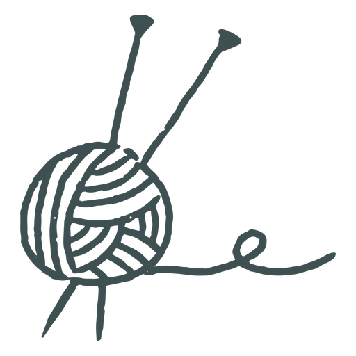
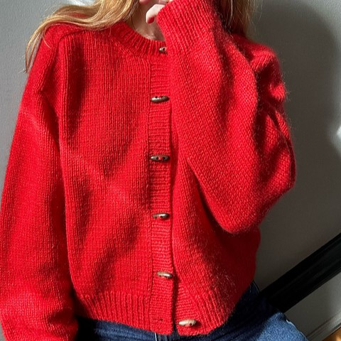
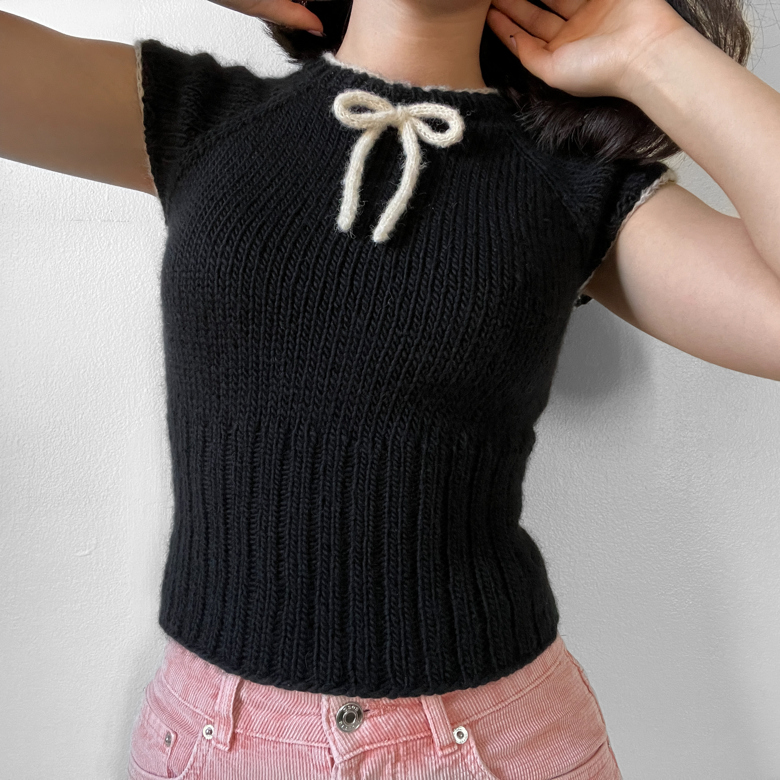
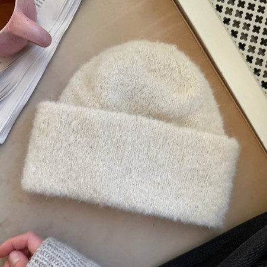
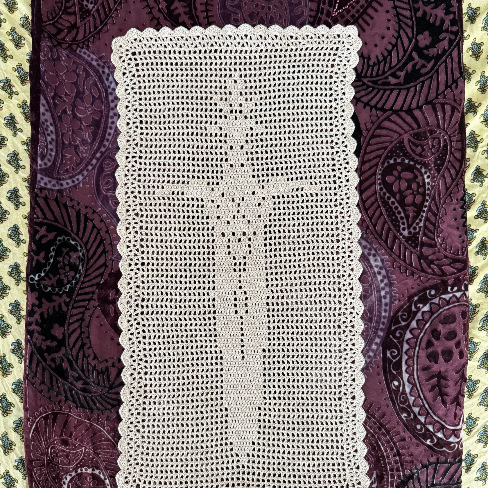
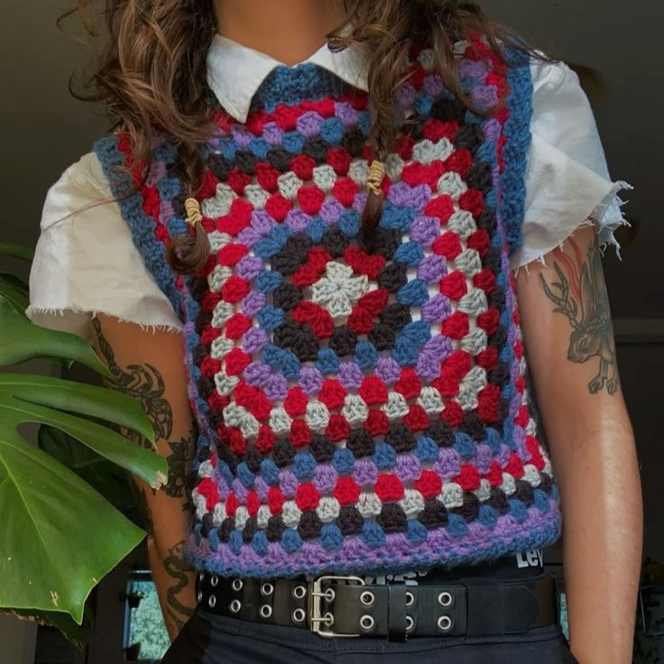

Knit & Crochet Diary
Knitting
| Image | Pattern Name | Designer | Type | Yarn Weight | Yarn Plans | Start Date | Finish Date |
|---|---|---|---|---|---|---|---|
|  Click to enlarge |
Cardigan No. 9 | My Favourite Things | Sweater | Aran + Lace | Knitting for Olive Heavy Merino Knitting for Olive Soft Silk Mohair |
01/30/2025 | 03/22/2025 |
|  Click to enlarge |
The Moth Tee | 10.00mm | Top | DK | Lang Yarns Frida | 03/31/2025 | |
|  Click to enlarge |
Oslo Hat | PetiteKnit | Accessory | DK + Lace | Sandnes Garn Peer Gynt Hobbii Diablo Wild Print |
04/14/2025 |
Crochet
| Image | Pattern Name | Designer | Type | Yarn Weight | Yarn Plans | Start Date | Finish Date |
|---|---|---|---|---|---|---|---|
|  Click to enlarge |
Filet Crochet Sword | Guppy Crochet | Decor | Crochet Thread | Aunt Lydia's Classic 10 | ||
 Click to enlarge |
Kitty Scarf | Xallua | Accessory | Any | DROPS Alpaca Bouclé | ||
|  Click to enlarge |
Granny Square Vest | Self draft | Top | Any | Undecided |